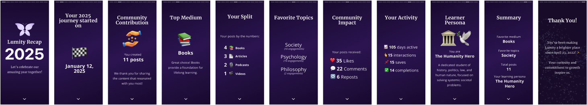
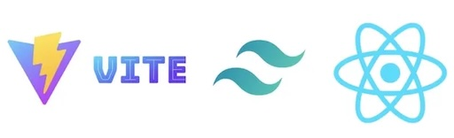
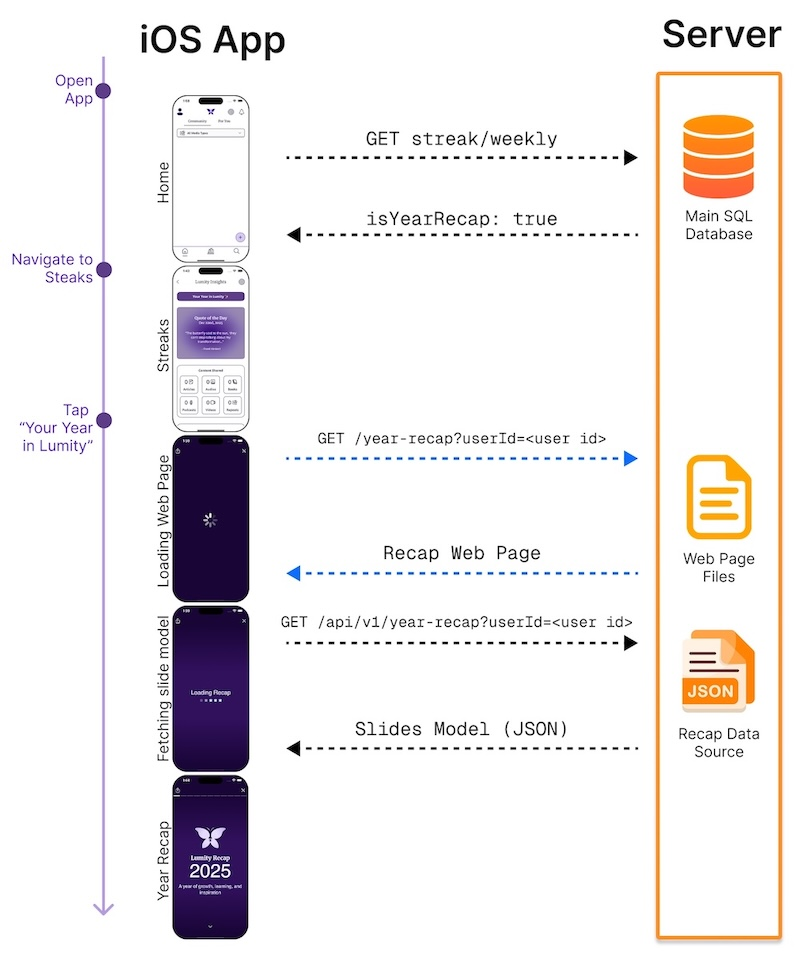

work / lumity-recap
Lumity Recap 2025
A "Spotify Wrapped"-style year in review for a cross-platform media app: designed, built on the web and the backend, and integrated into the native iOS app.
#overview
Lumity Media wanted to boost engagement with personalized insights drawn from how people use the app. As a freelance engineer I helped build Lumity Recap, which summarizes a user's 2025 activity across books, podcasts and videos.
#responsibilities
UI/UX design
Figma prototyping and design systems.
Web
React and Node.js implementation.
iOS integration
Native Swift and UIKit.
API design
REST services and data aggregation.
#design
The visual language is built around data storytelling: turning raw numbers into celebratory milestones.


#implementation
Web. Built with React and Vite for speed and styled with Tailwind CSS. The app consumes the recap API to generate dynamic visuals and summaries.


Backend. A Node.js service handles the data aggregation. I added two endpoints to the existing codebase:
iOS. With Swift and UIKit I integrated the feature into the native app. Users open their recap through a web-view transition that feels native. The sequence diagram shows the integration:


#demo
Running inside the Lumity iOS app.